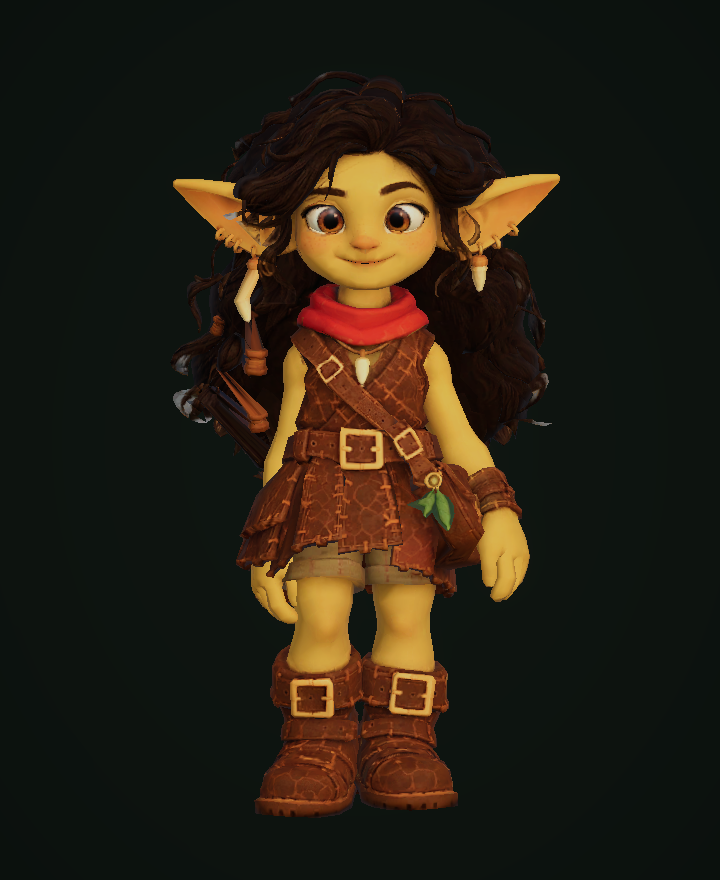
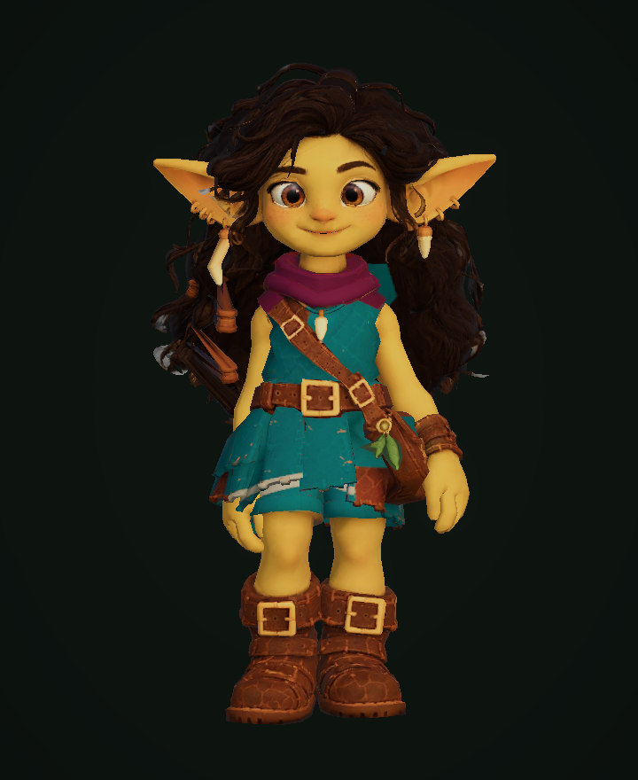
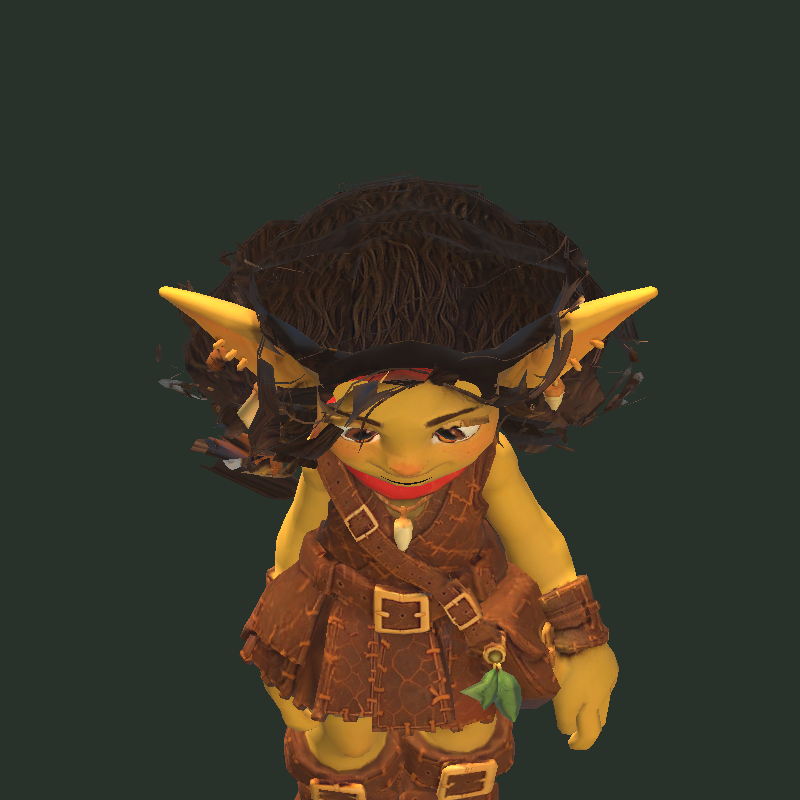
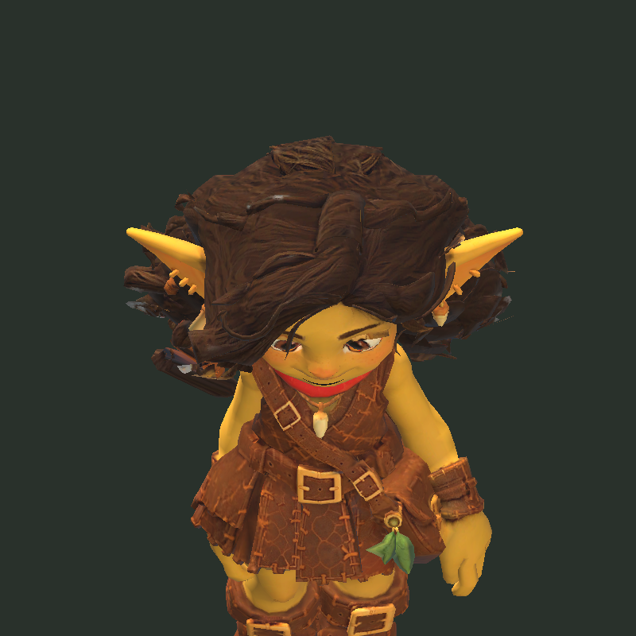
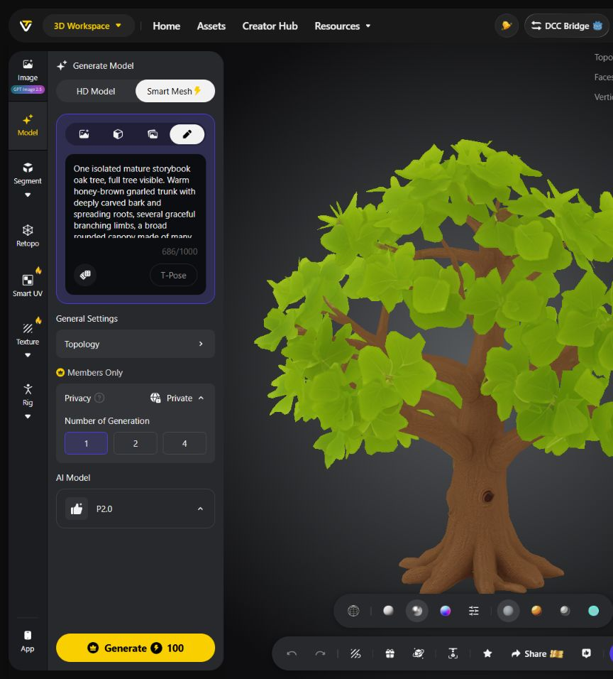
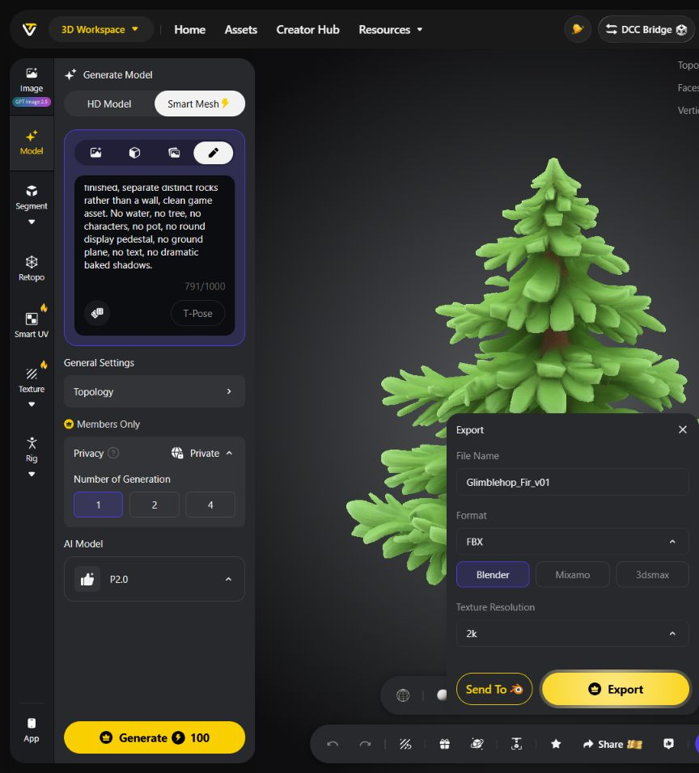
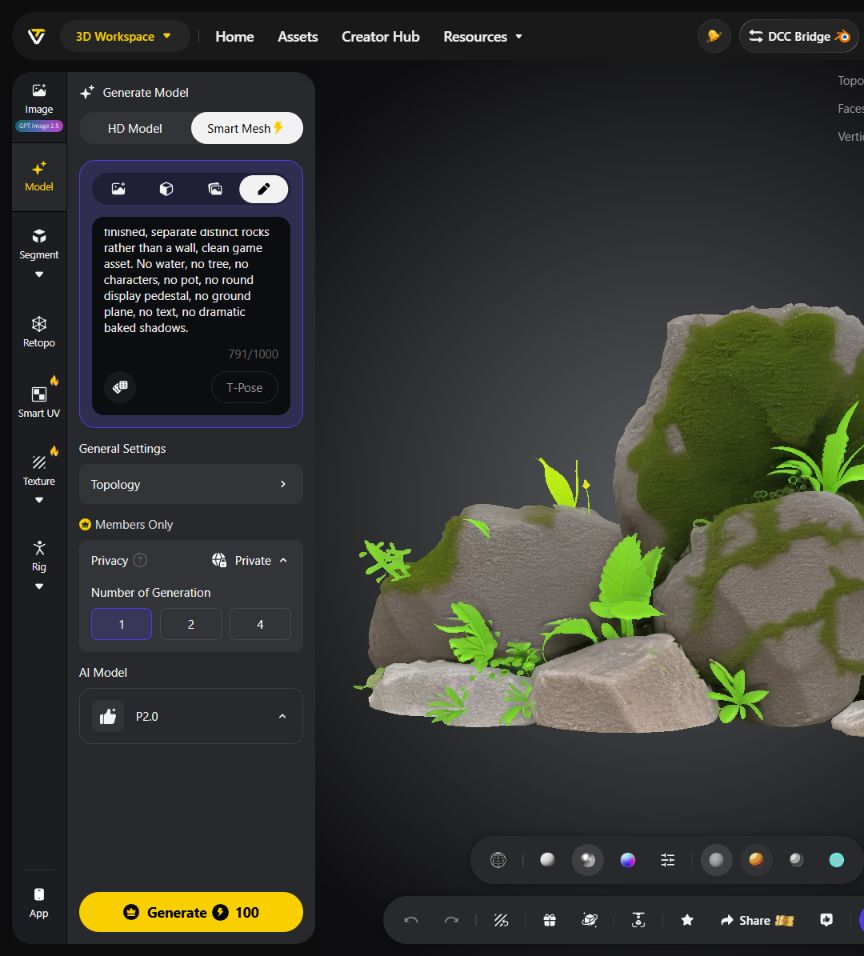

Glimblehop · Environment production · 21.10.2026
Живой лес · beta v03
Модульное окружение, встроенное в игровой FirstTrail8: лес, тёплый камень, бурная река с пеной и объёмные ветки переднего плана. Здесь показаны реальные кадры Unity.
31 prefab3 модели Tripo390 кредитов Tripo9 новых проверок
12 секунд · 1920 × 1080 · 24 fps. Два фиксированных художественных ракурса того же prefab. Игровое кадрирование показано ниже.
Вода и берегАсимметричный подводный берег, единое русло с перекатами и водопадом. Пена движется по течению, огибает камни и расходится неровным шлейфом в озере. Контактная пена и мелкие брызги соединяют водопад с озером.
Мягкое движениеВетер в кронах и камыше, объёмные дубовые ветви у камеры. Флаг и подвес фонаря собраны на одной консоли. Поддерживается уменьшенная анимация.
Игровая читаемостьСветлая свободная тропа, контрастный выход, неизменные позиции прыжков. 356 неподвижных Renderer объединены в 24 группы.
Лума: отдельный костюм

Исходный вариант: коричневая кожа и красный платок.
Новый вариант: бирюзовая ткань, льняная кайма и ягодный платок. Тот же риг, лицо, волосы и семь анимаций.Как менять одежду текстурой · Результат доводки
Лума: исправлены поверхности волос

До: исходные внешние полигоны волос смотрели внутрь.
После: 1180 полигонов восстановлены. Тот же непрозрачный материал с отсечением обратных граней; риг, UV и 7 лицевых форм сохранены.Проверено в игре
 Полный маршрут, трое друзей, русская версия, 1280 × 720.
Полный маршрут, трое друзей, русская версия, 1280 × 720. Первый уровень: четыре оставшиеся плиты и выход. 720 × 1280.
Первый уровень: четыре оставшиеся плиты и выход. 720 × 1280.Новый проход: 9 успешных проверок окон и леса. Ранее пройдены 20 проверок графики, камеры, кадрирования и персонажей; отдельный успешный прогон всех шести уровней. Русский и английский текст проверены при 1280 × 720, 720 × 1280, 640 × 360 и 360 × 640.
Перед публикацией нужен замер собранного Player на целевом устройстве. Видеозапись из редактора не является замером производительности.
Ассеты и бюджеты геометрии
| Prefab | Треугольники | Источник |
|---|
| Pine_A | 7,628 | Blender |
| Pine_B | 7,628 | Blender |
| Shrub_A | 1,044 | Blender |
| Shrub_B | 1,044 | Blender |
| Fern_A | 576 | Blender |
| Reeds_A | 1,100 | Blender |
| Boulder_A | 320 | Blender |
| Boulder_B | 320 | Blender |
| Boulder_C | 320 | Blender |
| Lantern_A | 700 | Blender |
| Flag_A | 192 | Blender |
| ExitPost_A | 484 | Blender |
| GrassTuft_A | 168 | Blender |
| Ivy_A | 288 | Blender |
| ExitStone_A | 320 | Blender |
| Flowers_A | 546 | Blender |
| BackdropBank_A | 1,360 | Blender |
| CreekBed_A | 120 | Blender |
| CreekPebbles_A | 3,100 | Blender |
| ShorePebbles_A | 2,340 | Blender |
| RiverSurface_A | 5,760 | Blender |
| RiverRocks_A | 80 | Blender |
| AsymmetricShelf_A | 1,600 | Blender |
| ForegroundBranch_A | 1,985 | Blender |
| ForegroundBranch_B | 1,985 | Blender |
| CanopyShrub_A | 2,490 | Blender / approved oak texture |
| CanopyShrub_B | 2,490 | Blender / approved oak texture |
| WaterImpactSpray_A | 56 | Blender / approved oak texture |
| Oak_Tripo_A | 7,301 | Tripo + Blender |
| Fir_Tripo_A | 11,728 | Tripo + Blender |
| RockGarden_Tripo_A | 9,109 | Tripo + Blender |
Результаты Tripo до обработки в Blender

Дуб · приватная генерация
Ель · приватная генерация
Мшистые валуны · приватная генерация